Inicio
Datasets
Kit de Inicio
Acerca de
Seleccionar dataset
Geoportales
Info Satélital
MDS
Datasets
Documentación
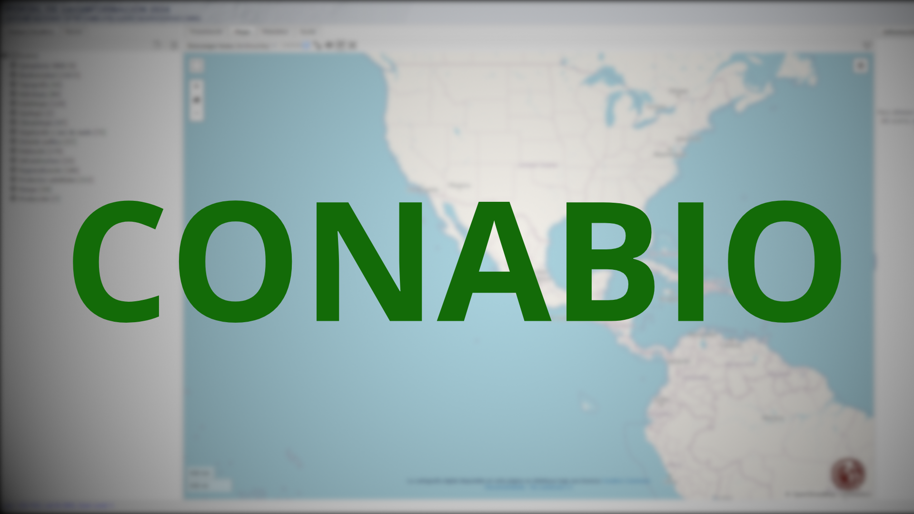
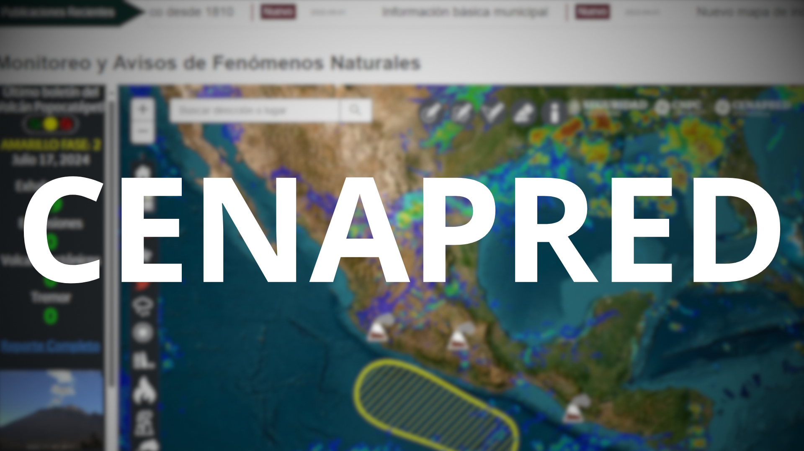
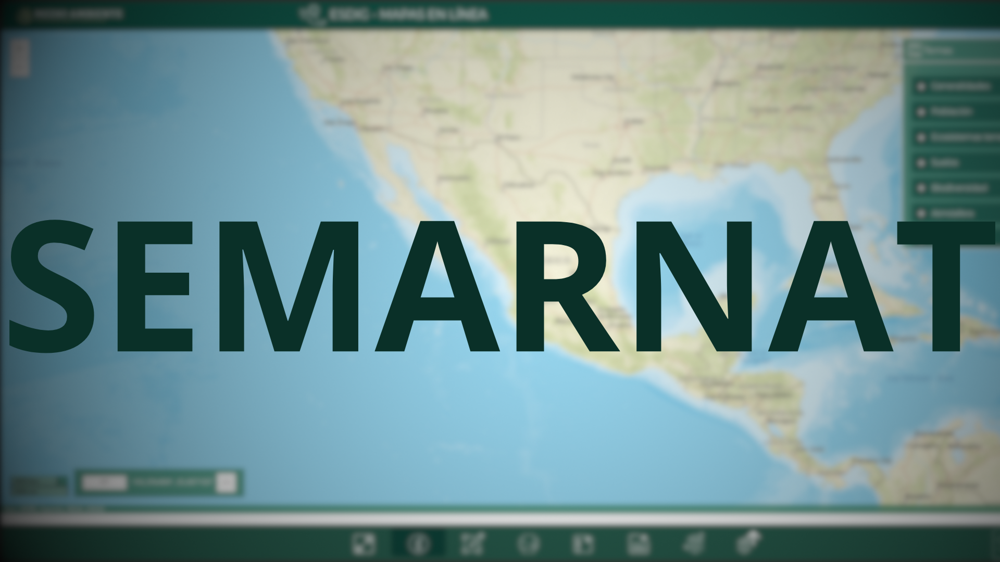
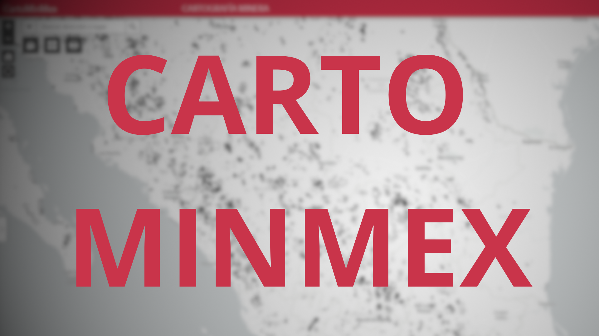
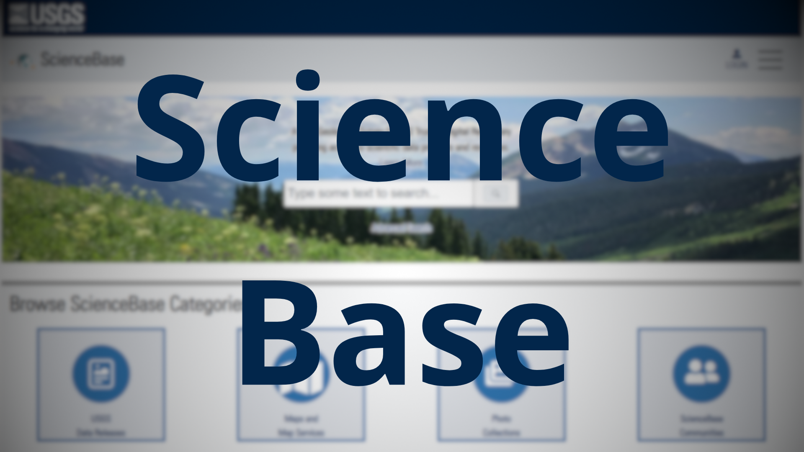
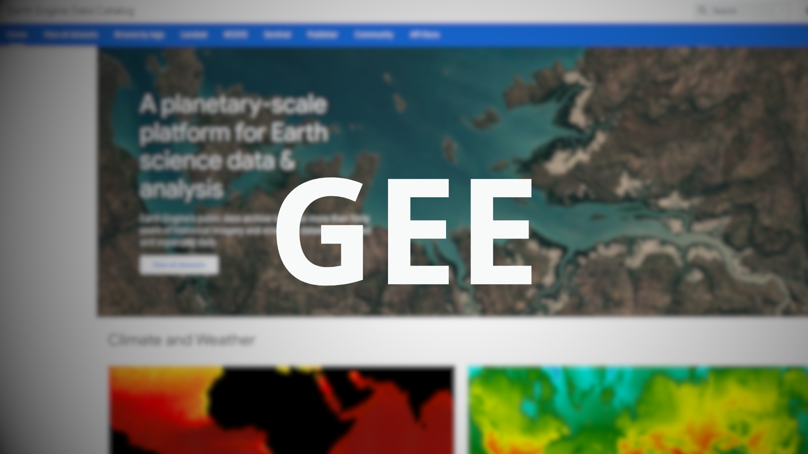
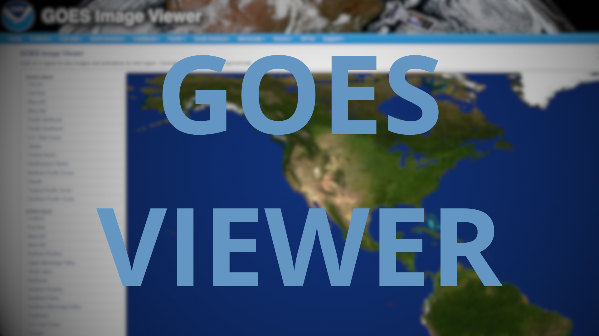
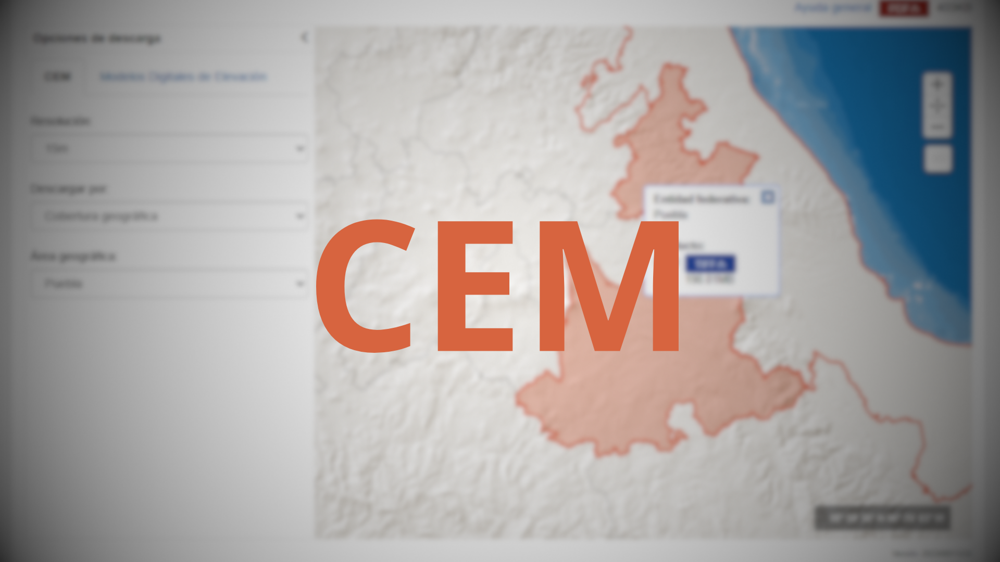
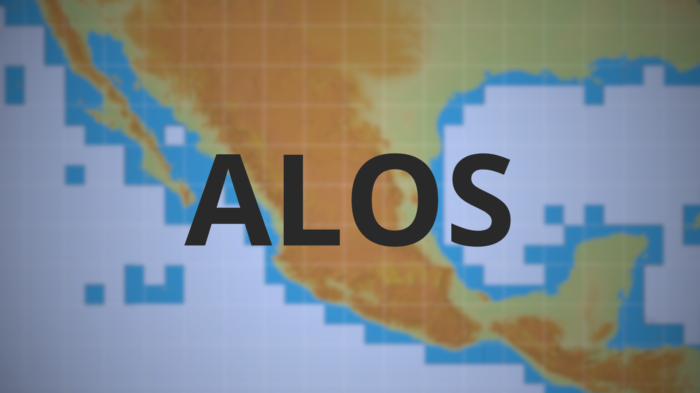
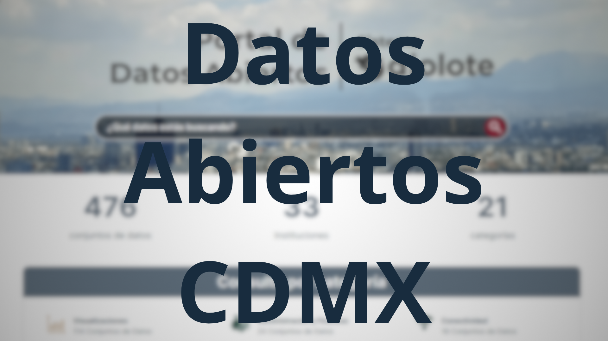
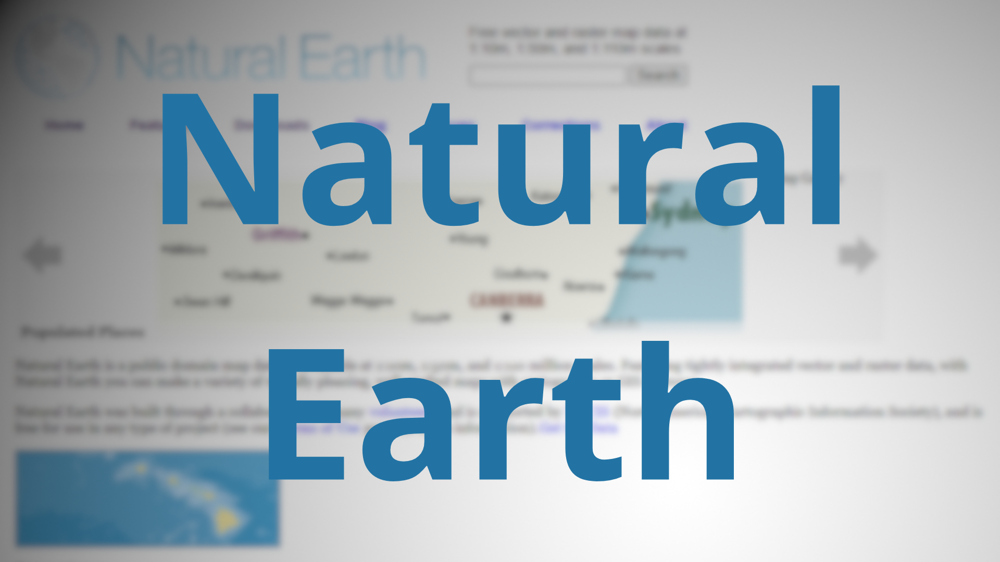
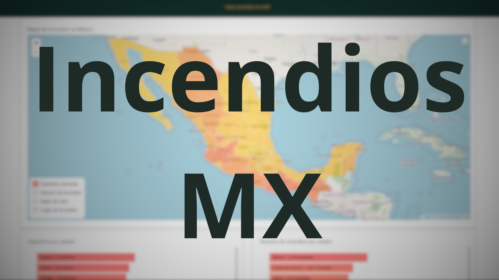
Descarga datos básicos [70MB]
El siguiente archivo cuenta con las siguientes capas:
* Estados
* Municipios
* Cuencas
* Ríos
* Áreas Naturales Protegidas
Proyección: México ITRF08/CCL